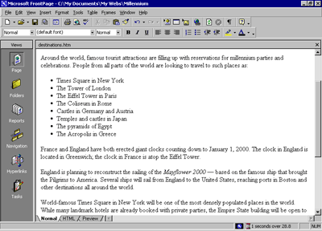
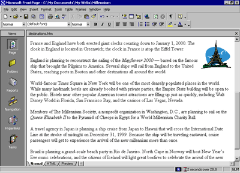
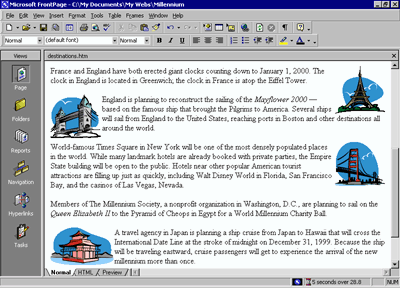
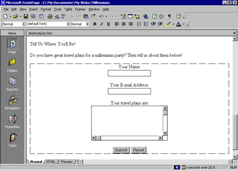

| ||||
The Background page will inherit its formatting from a graphical theme that you will apply to the Millennium Celebration Web later, in Lesson 2. The Destinations page, however, requires some more design work.
To help the reader differentiate the paragraph headings, list of travel destinations, and event details that the text on this page talks about, you will add some pictures, format paragraph styles, and create a bulleted list.
To create a bulleted list
FrontPage converts the selected text to a bulleted list.
Your page should now look like this:

You can also create numbered lists with FrontPage. When you add new items to a numbered list, FrontPage automatically numbers them sequentially. You can add to bulleted and numbered lists by pressing ENTER after an item in the list. To end a list, press ENTER twice after typing the last list item.
Next, you will place four pictures on the current page and use positioning features in FrontPage to align the pictures with the paragraphs they are associated with. This will create a more interesting page layout.
To position pictures with text
When you last inserted a picture, you did not have a Web site open, and FrontPage automatically displayed the Select File dialog box. Now that a Web site is open, FrontPage assumes you want to work with pictures that are already part of your Web site, and therefore displays the Picture dialog box.
FrontPage displays the Select File dialog box.
FrontPage inserts a picture of the Eiffel Tower in Paris just before the current paragraph.
FrontPage displays the Position dialog box.
The picture is aligned with the right margin of the current page and the text now flows around it.
Your page should now look like this:

You can either place pictures one by one in this way, or you can import all the pictures you will use on your pages all at once. While importing single files is done in Page view, inserting a group of files or entire folders is done in Folders view.
To add a group of files to the current Web site
 Folders icon
Folders iconFolders view is an expanded view of the Folders List that you have seen in Navigation and Page view. Similar to the way you look at files in Windows Explorer, here you can view details about the files and folders in your Web site, and perform such file management tasks as adding, deleting, moving, copying, and renaming files.
FrontPage displays the Import dialog box. Here, you can add files and folders from your local file system, a local area network, a company file server, or a resource on the Internet or World Wide Web, such as an FTP server.
FrontPage supports standard Windows file selection methods.
FrontPage adds the pictures you selected to the list in the Import dialog box.
Now that the remaining pictures are added to your Web site, it's time to finish the layout of the Destinations page.
To finish the page layout
When you click a single picture file in the Picture dialog box, FrontPage displays a preview of the picture, so you can make sure it's the one you want to insert. This is one of the benefits of adding all your pictures to the Web site before inserting them on your pages.
The Picture dialog box also links to the clip art gallery that is included with FrontPage. And if you have a scanner or a digital camera, you can click the Scan button in this dialog box to acquire original pictures from those sources.
Your page should now look like this:

Positioning pictures and other page elements around text on your page makes for a more interesting design, much like pages in a magazine or newspaper. By positioning pictures in the margin, your page layout will be preserved even when the page is viewed at a different screen size and resolution in a Web browser.
To finish the Destinations page, you will create a feedback form so that you can interact with site visitors who want to participate. A feedback form can be used to collect comments and information from people visiting your Web site.
To create a feedback form
FrontPage inserts a new form on the current page. The dashed lines indicate the form's boundary. By default, a new form contains Submit and Reset push buttons.
Next, you will customize the default form by adding form-fields and form-field labels, to let site visitors know what kind of information you want them to enter into the form.
To customize the form
FrontPage moves the cursor to the middle of the first line of the form.
Holding SHIFT while pressing ENTER creates a line break. Line breaks are useful for spacing lines of text more closely together than standard paragraph spacing.
FrontPage inserts a one-line text input field into the form.
FrontPage inserts a scrolling text input field into the form.
FrontPage displays the Scrolling Text Box Properties dialog box. Here, you can change the appearance of the text box.
The scrolling text box has increased in size, which will encourage site visitors to write a little more than just a brief line of text about their New Year's plans.
Now that your form and the Destinations page are finished, it's a good idea to save your work.
Your page should now look like this:

Good work! The feedback form is finished and so is the Destinations page. In the next part of the lesson, we'll add the last two pages -- an online photo album and a list of links to your favorite sites on the World Wide Web.
Did you find this material useful? Gripes? Compliments? Suggestions for other articles? Write us!
© 1999 Microsoft Corporation. All rights reserved. Terms of use.